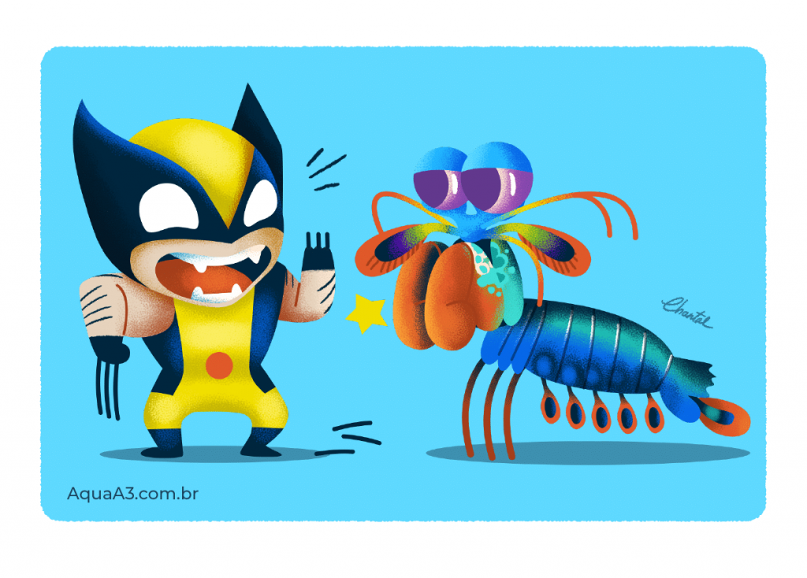
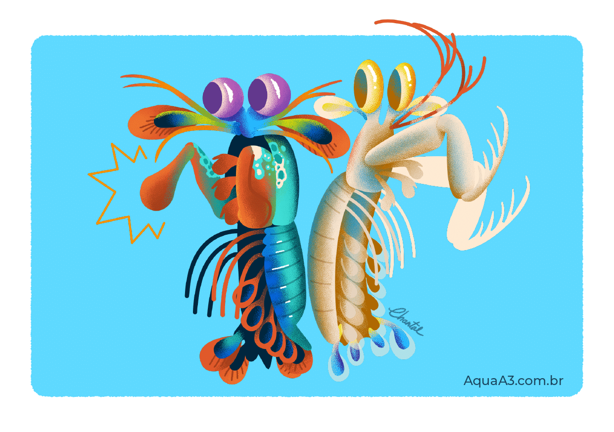

Fatos sobre o Stomatopoda
Odontodactylus scyllarus: sobre sua espécie
Os estomatópodes são predadores ativos que caçam presas com o auxílio de um sentido de visão muito apurado e capaz de interpretar polarização no espectro ultravioleta e infravermelho). Apresentam uma grande variação de tamanho, que pode ir de poucos milímetros até aproximadamente 40 cm nas espécies maiores. Eles vivem em fundo consolidado, lodoso ou ainda arenoso, onde cavam seus buracos ou aproveitam-se dos orifícios deixados por outros animais para neles se instalar. São animais exclusivamente carnívoros, alimentando-se de camarões, caranguejos, moluscos, peixes e até mesmo outros da mesma ordem.
| Classificação Científica | |
| Reino: | Animalia |
| Filo: | Arthropoda |
| Subfilo | Crustacea |
| Classe: | Malacostraca |
| Subclasse: | Hoplocarida |
| Ordem: | Stomatopoda (Latreille, 1817) |
O animal mais forte do mundo

O Camarão Mantis esmagador possui dois apêndices bem desenvolvidos (semelhantes a um martelo), chamados de Porretes de Dáctilo. Com essas “super patas” o animal espanca e esmaga suas presas em uma intensidade de aproximadamente 60 kg/cm² (daí o motivo de um de seus nomes ser lagosta-boxeadora).
Mais duro que o adamantium?
Devido a habilidades tão únicas, pesquisadores de diversas partes do planeta realizam estudos com o
objetivo de entender o mecanismo da força de ataque e o motivo da resiliência do Camarão Mantis
quanto ao forte impacto.
As descobertas dos pesquisadores de Singapura
Por não não existirem outros casos de mecanismos animais que criem uma intensidade de
força (nem
mesmo os músculos/tendões em outras espécies), cientistas da Universidade Tecnológica de Nanyang, na
Singapura, publicaram um estudo na revista
científica iScience sobre funcionamento dos “punhos” do
Camarão Mantis.
O animal mais rápido no gatilho

Além da enorme potência de seu soco, esse animal consegue movimentar seus apêndices tal qual um tiro de arma de fogo: seu golpe pode chegar a uma velocidade 720 km/h. Curiosamente, tanto a força quanto rapidez do ataque, não danificam sua estrutura corporal.
Camarão Mantis é um perfurador e esmagador!
Devido a uma diferença anatômica de seus apêndices, o Camarão Mantis pode ser classificado em dois grupos: os que têm ataque perfurador (spearers) e esmagador (smashers). Com isso, os esmagadores são considerados um dos animais mais fortes e velozes do planeta, por terem um ataque rápido como uma bala e forte como um touro.
Referências Bibliogŕaficas
| Wikipedia: | https://pt.wikipedia.org/wiki/Stomatopoda. Acessado em 01/02/2022 às 13h39. |
| Aquaa3: | https://www.aquaa3.com.br/curiosidades-camarao-mantis/#O_animal_mais_forte_do_mundo. Acessado em 01/02/2022 às 13h40." |
| The Oat Meal: | https://theoatmeal.com/comics/mantis_shrimp. Acessado em 01/02/2020 às 13:40. |